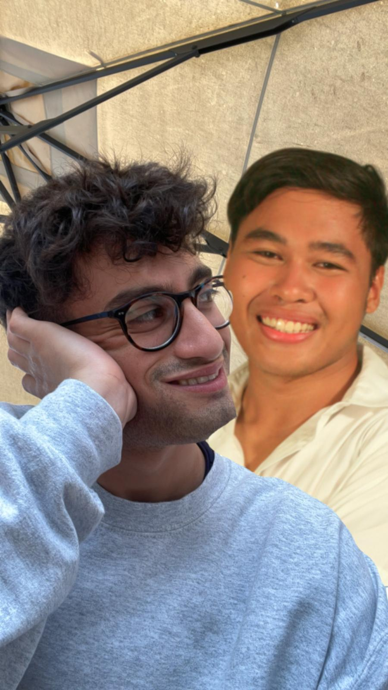
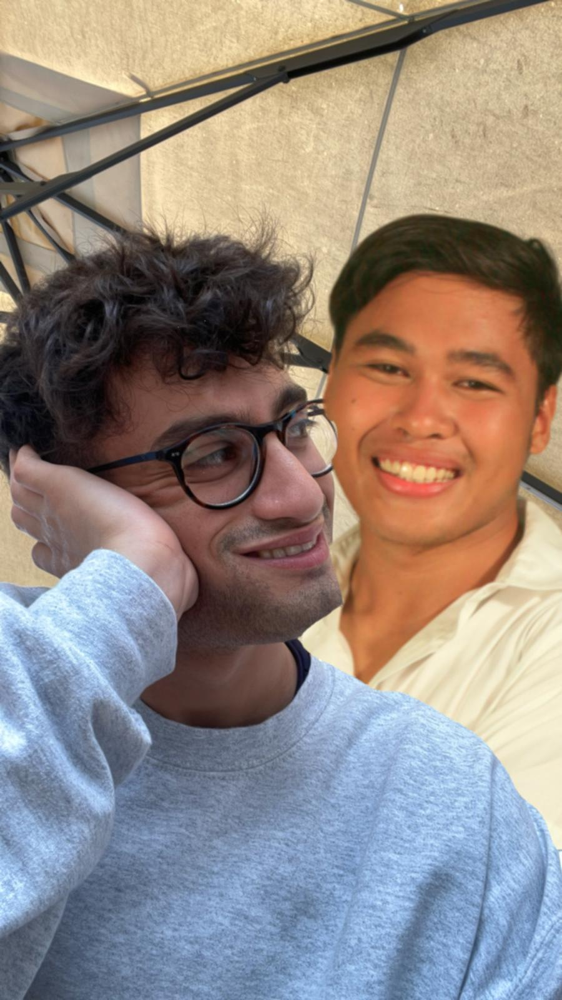

Claudia
Ho sognato per la prima volta quest'uomo circa un anno fa. Ricordo che mi dava un sacchetto con dentro dei biscotti al thc, poi il vuoto totale. Dopo quella volta ho continuato a vederlo ovunque: nel mio letto, in macchina mentre guido e a spasso con il mio cane. Spero che questi avvistamenti durino finché un biscotto al thc non mi faccia fuori per davvero.